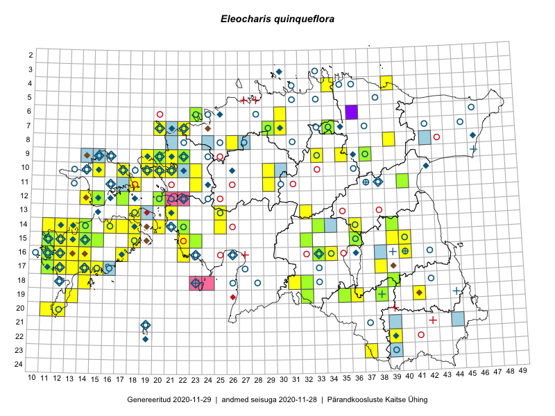

Eleocharis quinqueflora
Uuendatud: 2016-12-02
Kaardile koondatud taksonid: Eleocharis quinqueflora (Hartmann) O.Schwarz

Kaart põhineb 56 kirjel, neist vaatlusi 53 ja eksemplare 3. Taksonit on leitud 45 ruudust.
Kuvatud viited 20 esimesele andmebaasikirjele, ülejäänud PlutoFis
- Toomas Kukk, Peedu Saar: 2015-08-05: 20-11: ala
- Peedu Saar: 2015-07-15: 15-39: ala
- Toomas Kukk, Tiit Hallikma: 2015-06-11: 11-29: ala
- Peedu Saar: 2015-08-04: 14-36: ala
- Toomas Kukk: 2014-06-18: 18-14: ala
- Thea Kull: 2015-06-15: 10-15: ala
- Jana-Maria Habicht, Ester Valdvee: 2015-07-20: 07-34: ala
- Eeva-Maria Jeletsky, Tarmo Niitla: 2015-06-25: 12-15: ala
- Eeva-Maria Jeletsky, Tarmo Niitla: 2015-06-21: 12-17: ala
- Oliver Parrest: 2015-07-01: 19-13: ala
- Mari Reitalu: 2015-08-29: 16-13: ala
- Mari Reitalu: 2014-05-18: 15-11: ala
- Mari Reitalu, Triin Reitalu: 2015-08-14: 14-13: ala
- Mari Reitalu, Triin Reitalu: 2014-08-15: 20-11: ala
- Mari Reitalu: 2014-09-02: 17-12: ala
- Mari Reitalu: 2015-08-13: 17-12: ala
- Mari Reitalu: 2015-09-03: 16-12: ala
- Mari Reitalu, Oliver Parrest: 2015-07-14: 14-11: ala
- Mari Reitalu, Oliver Parrest: 2015-08-12: 17-13: ala
- Mari Reitalu, Oliver Parrest: 2015-07-21: 15-12: ala